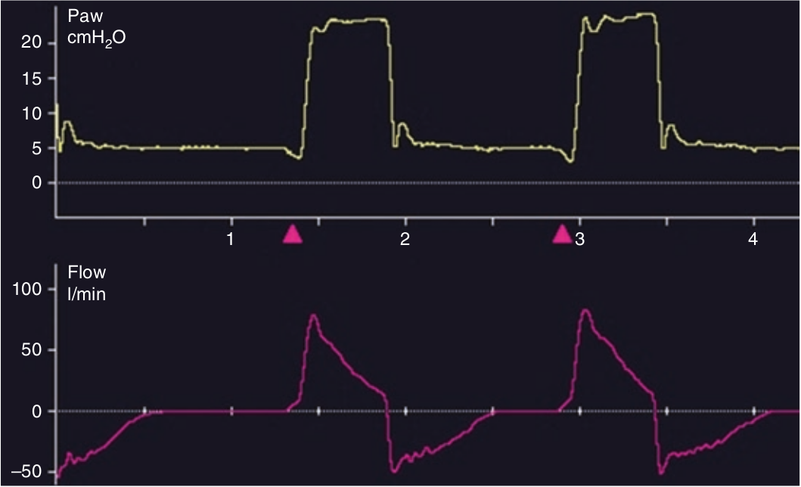

چنانچه جهش شدت جریان بدون جهش فشار در ابتدای دم مشاهده شود، بدین معنی است که تلاش دمی بیمار به ناگهان متوقف شده است و معمولا هنگامی روی میدهد که مدت تاخیر دمی طولانی باشد. تحت این شرایط تلاش دمی بیمار بسیار قبل از شروع حمایت ونتیلاتور آغاز میشود و بنابراین تقریبا بلافاصله پس از شروع تنفس ونتیلاتور به انتهای خود میرسد.

فراجهش شدت جریان در ابتدای دم بدون جهش فشار همراه است با:
۱ - مقاومت بالا
۲ - میل زیاد تنفسی
۳ - کمپلیانس کم
۴ - اتساع مفرط دینامیک
۵ - تاخیر دمی طولانی